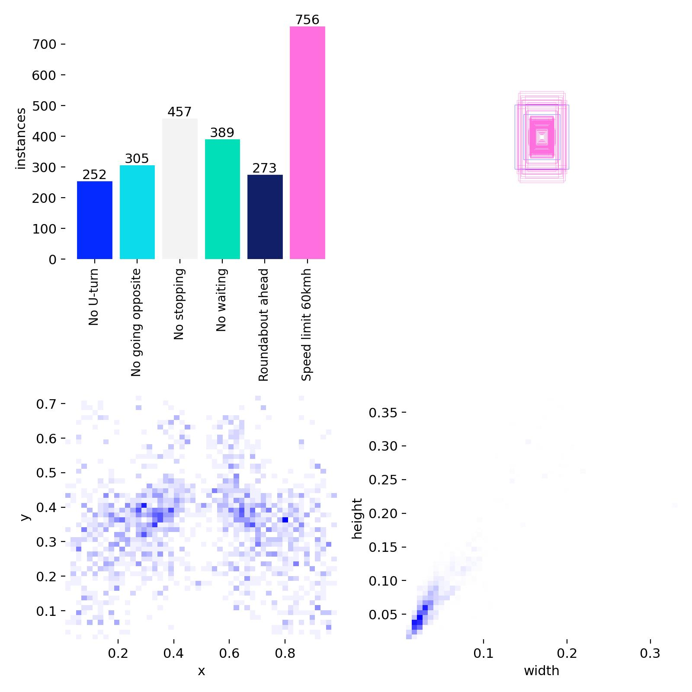
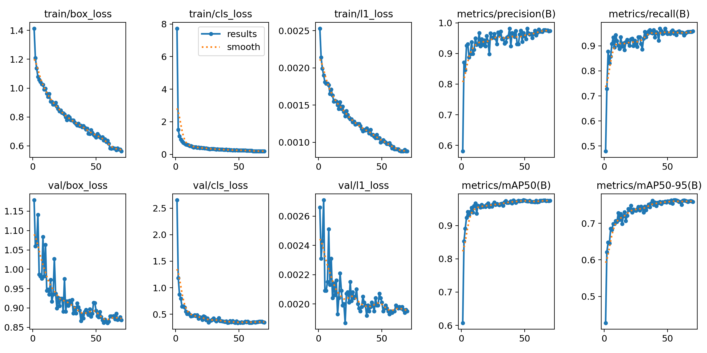
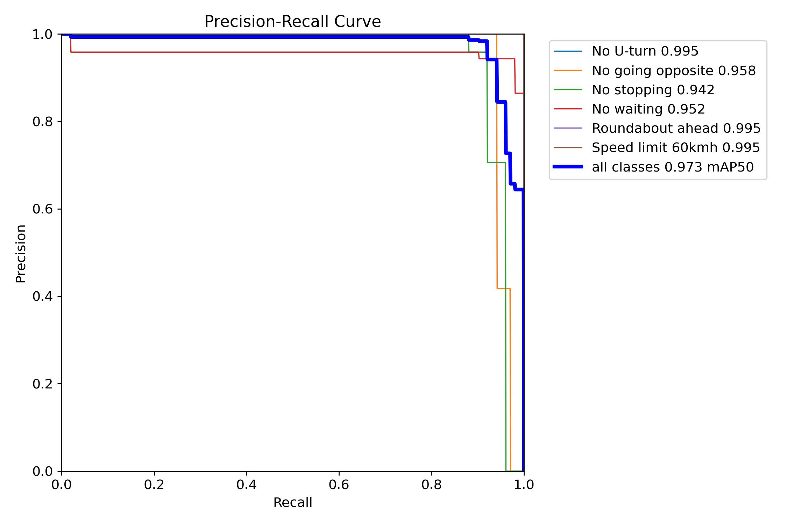
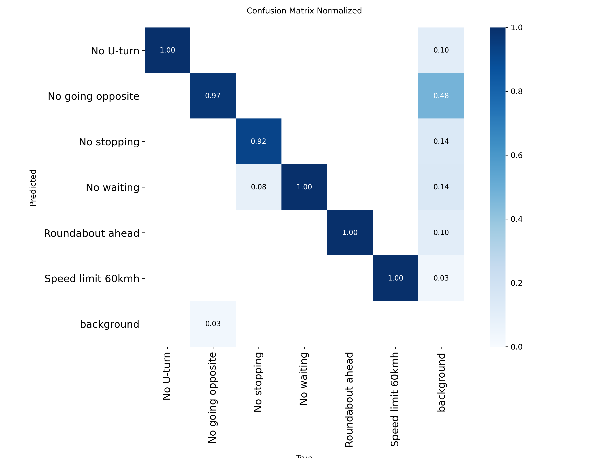
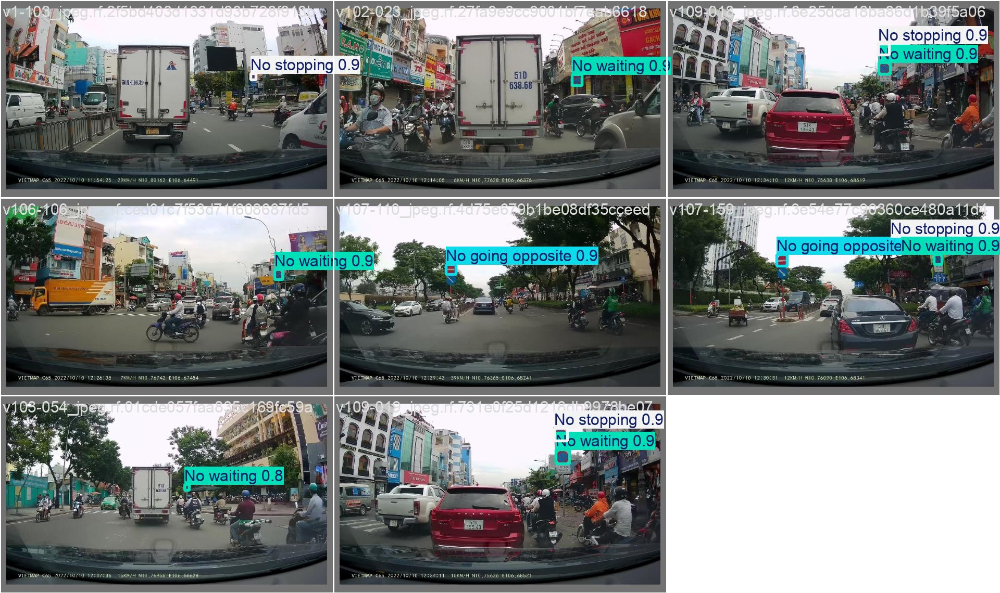

1. Data preparation
Dataset and splits
The notebook loads Roboflow's Vietnamese-Traffic-Signs-Detection-7 dataset in YOLO format. The code used the dataset's existing train, validation, and test folders; although a 10% train-to-validation split is described in comments and configured as a variable, that split code is commented out. The recorded input counts were:
| Split | Images before preprocessing | Use |
|---|---|---|
| Train | 2,118 | Deduplication and augmentation, then model fitting |
| Validation | 196 | Training-time model selection and validation metrics |
| Test | 103 | Final held-out evaluation |
Class balance, duplicate filtering, and augmentation
Before filtering, the training labels contained 2,730 object instances. Three classes exceeded the notebook's 400-instance threshold and were treated as heavy classes; the speed-limit class was the only class below the 200-instance rare-class threshold.
| Class | Instances before deduplication | Instances after deduplication |
|---|---|---|
| No U-turn | 252 | 252 |
| No going opposite | 573 | 215 |
| No stopping | 504 | 225 |
| No waiting | 939 | 353 |
| Roundabout ahead | 273 | 273 |
| Speed limit 60kmh | 189 | 189 |
| Total | 2,730 | 1,507 |
- Perceptual-hash (pHash) filtering used a Hamming-distance threshold of 5 on 1,404 candidate training images whose labels were limited to the heavy classes. It removed 902 images, leaving 1,216 training images before augmentation.
- Every retained training image received a light augmentation pass (horizontal flip, probability 0.5). Images containing the rare speed-limit class also received up to three strong passes: horizontal flip, rotation up to 12°, brightness/contrast, Gaussian blur, and shift/scale. Bounding boxes were transformed with the images, clipped, and filtered by visibility.
- Validation and test images were not augmented. No fixed-size preprocessing resize was enabled; training used an input size of 832 pixels. Ultralytics reported caching 1,690 training images and 191 validation images after preprocessing.

2. Model training
A pretrained YOLO26n detector (yolo26n.pt) was fine-tuned using
Ultralytics. The configured run completed all 70 epochs; the CSV records approximately
1,844 seconds (30.7 minutes) of cumulative training time.
| Setting | Value |
|---|---|
| Image size | 832 |
| Epochs / batch size | 70 / 12 |
| Optimizer | AdamW |
| Initial learning rate | 0.001 |
| Early stopping patience | 15 epochs |
| Training augmentation | Mosaic 0.3; mosaic disabled for final 10 epochs |
| Execution | GPU 0, 2 workers, image cache enabled, AMP enabled |
| Reproducibility | Seed 0; deterministic mode enabled in run arguments |
Training and validation losses declined over the run while precision, recall, and mAP rose and then largely plateaued. In the training CSV, the highest validation mAP@0.50:0.95 was 0.7635 at epoch 56 (validation precision 0.9502, recall 0.9543, and mAP@0.50 0.9711).

3. Evaluation
Held-out test results
The notebook loaded the saved best checkpoint and evaluated it on the dataset's test split at 832 pixels. These test-set metrics are distinct from the validation metrics used during training.
| Metric | Test result | Interpretation |
|---|---|---|
| Precision | 0.9686 | High proportion of predicted detections were correct |
| Recall | 0.9633 | High proportion of labeled objects were detected |
| mAP@0.50 | 0.9727 | Strong detection performance at IoU 0.50 |
| mAP@0.50:0.95 | 0.7836 | More stringent localization metric averaged across IoU thresholds |
Per-class AP@0.50 from the test precision-recall plot:
| Class | AP@0.50 |
|---|---|
| No U-turn | 0.995 |
| No going opposite | 0.958 |
| No stopping | 0.942 |
| No waiting | 0.952 |
| Roundabout ahead | 0.995 |
| Speed limit 60kmh | 0.995 |



4. Conclusion and recommendations
The run demonstrates strong held-out test performance, with 0.9727 mAP@0.50 and 0.7836 mAP@0.50:0.95. Performance is strongest for No U-turn, Roundabout ahead, and Speed limit 60kmh; No stopping and No waiting have the lowest per-class AP@0.50 and merit additional review.
- Review background false positives, particularly predictions of “No going opposite.” Add representative hard-negative scenes if available.
- Inspect the lower-performing No stopping and No waiting examples, including small, occluded, and overlapping signs; improve label consistency or add samples where appropriate.
- Run a cross-split duplicate audit. The notebook's pHash pass only compares selected training images, so it does not establish that near-duplicates are absent from validation or test.
- Before deployment, evaluate on additional routes, camera conditions, lighting, and weather. High offline scores alone do not establish road-safety readiness.
Source: supplied notebook and saved run artifacts in runs/detect/train and
runs/detect/val. Reported aggregate test metrics are the values printed by the
notebook's explicit split="test" evaluation; rounded per-class AP values are read
from its corresponding precision-recall plot.